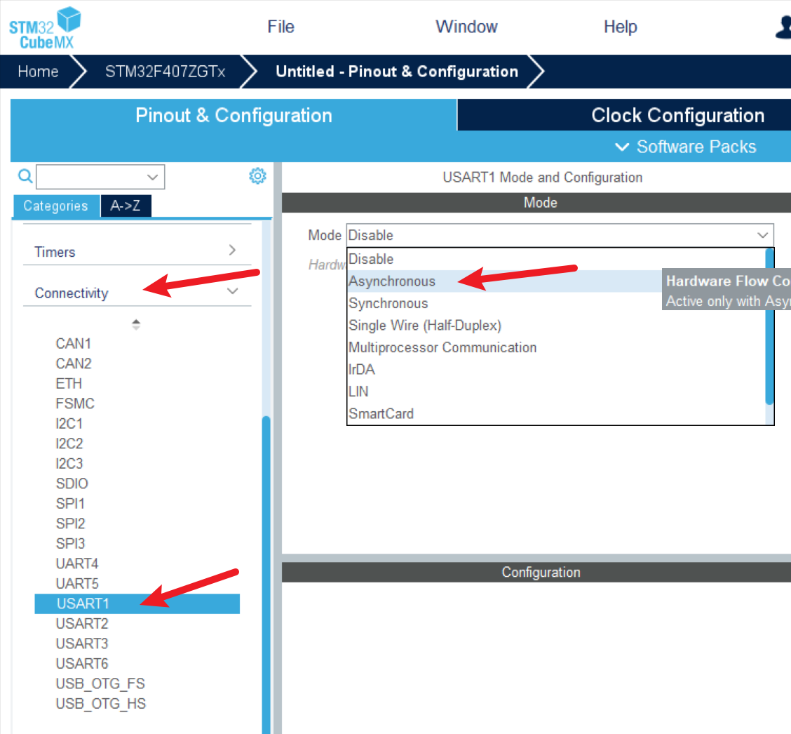
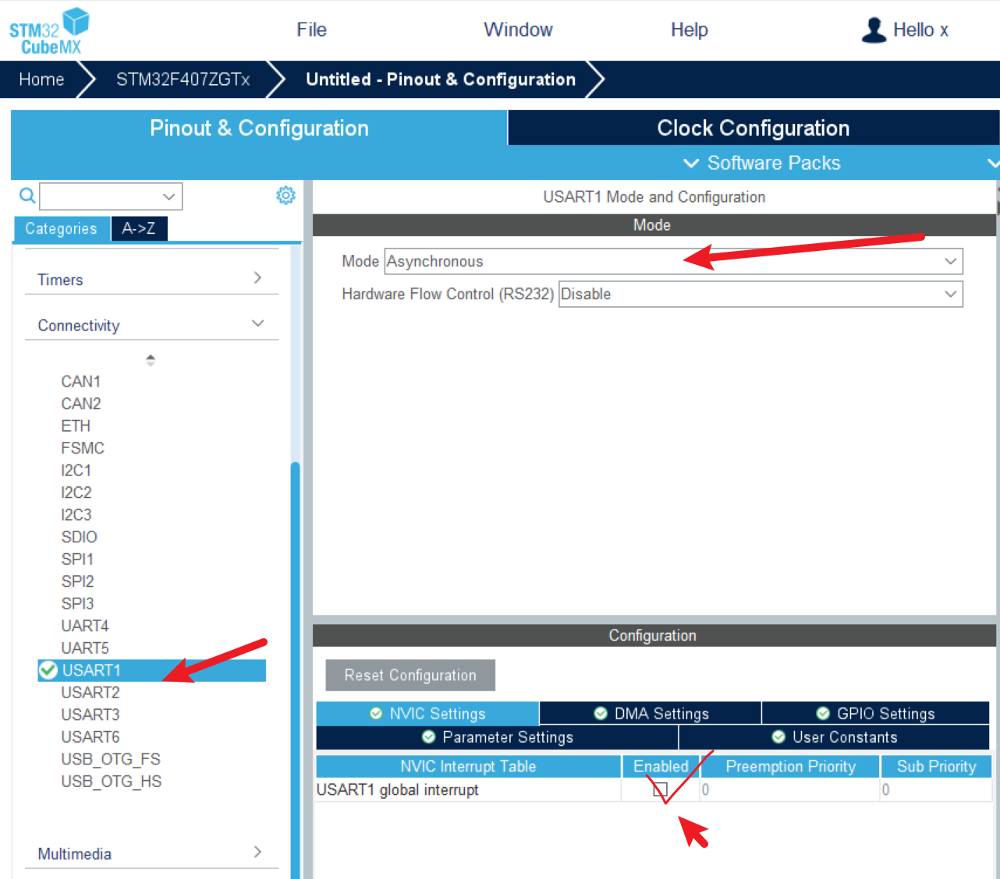
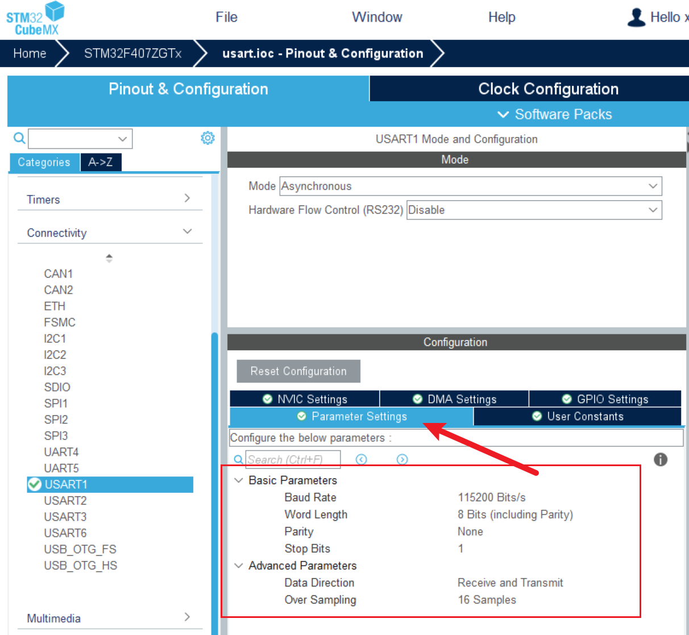
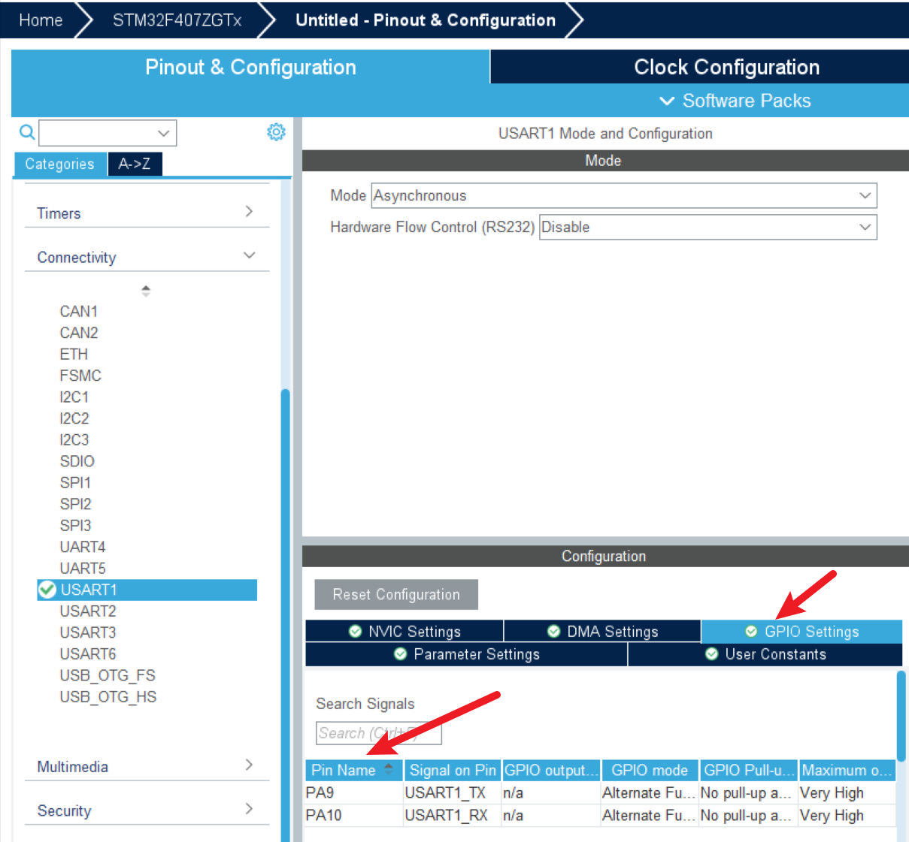
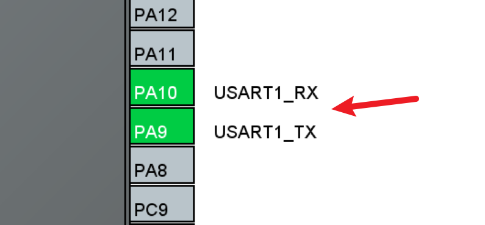
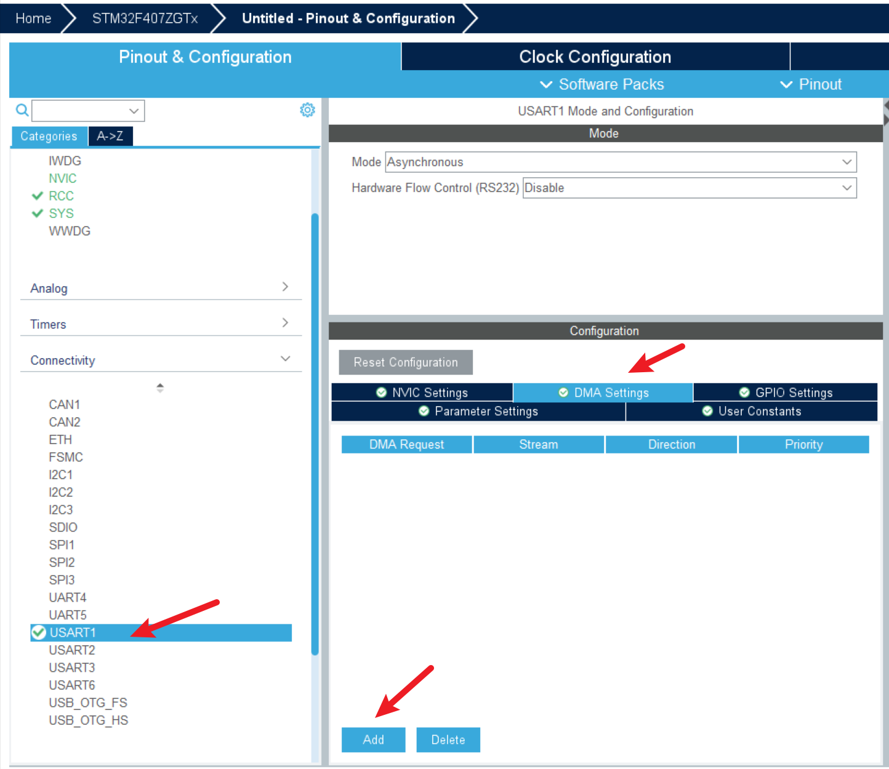
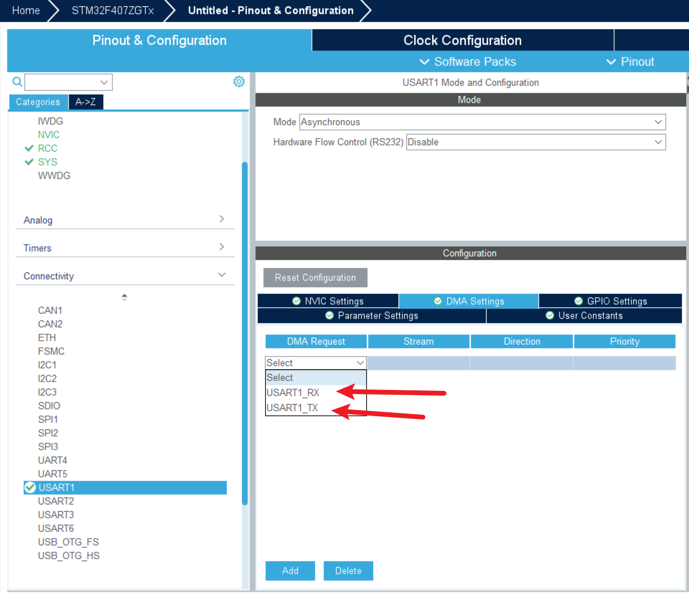

<!DOCTYPE lake>
<h2 data-lake-id="RvZuc" id="RvZuc"><span data-lake-id="u14ac1eaa" id="u14ac1eaa">学习目标</span></h2><ul list="u80ed19ce"><li data-lake-id="u99d2866b" fid="uf040575e" id="u99d2866b"><span data-lake-id="u1338948d" id="u1338948d">熟悉STM32CubeMX配置流程</span></li><li data-lake-id="u9a3c88c7" fid="uf040575e" id="u9a3c88c7"><span data-lake-id="ucee07ec1" id="ucee07ec1">掌握串口发送和接收</span></li><li data-lake-id="u5b33f71d" fid="uf040575e" id="u5b33f71d"><span data-lake-id="u45f3182e" id="u45f3182e">掌握串口DMA发送和DMA接收</span></li><li data-lake-id="u7f09c861" fid="uf040575e" id="u7f09c861"><span data-lake-id="uc0fbeb2f" id="uc0fbeb2f">掌握printf配置</span></li></ul><h2 data-lake-id="hygBD" id="hygBD"><span data-lake-id="u8381a1ed" id="u8381a1ed">学习内容</span></h2><h3 data-lake-id="tfgGd" id="tfgGd"><span data-lake-id="uf50d5dbe" id="uf50d5dbe">开发流程</span></h3><ol list="u4772c6c6"><li data-lake-id="u20d02eb0" fid="uaa49d877" id="u20d02eb0"><span data-lake-id="u92edc862" id="u92edc862">配置芯片串口功能</span></li><li data-lake-id="u199a613e" fid="uaa49d877" id="u199a613e"><span data-lake-id="u97d18486" id="u97d18486">编写串口代码</span></li><li data-lake-id="uc8fae169" fid="uaa49d877" id="uc8fae169"><span data-lake-id="u2e1fc9b5" id="u2e1fc9b5">调试</span></li></ol><h3 data-lake-id="jelQL" id="jelQL"><span data-lake-id="ua62a4017" id="ua62a4017">串口功能配置</span></h3><h4 data-lake-id="ZzXcZ" id="ZzXcZ"><span data-lake-id="ua86395b6" id="ua86395b6">串口功能开启</span></h4><p data-lake-id="ucf85db2f" id="ucf85db2f"></p><ul list="uddb2b418"><li data-lake-id="u9e32848c" fid="u46253693" id="u9e32848c"><span data-lake-id="u98c3b3f9" id="u98c3b3f9">在</span><code data-lake-id="u7de27fff" id="u7de27fff"><span data-lake-id="ub6c9d83b" id="ub6c9d83b">Connectivity</span></code><span data-lake-id="ua40aed31" id="ua40aed31">下选择合适的串口，这里选择</span><code data-lake-id="u6d58f999" id="u6d58f999"><span data-lake-id="ud4d8adf3" id="ud4d8adf3">USART1</span></code></li><li data-lake-id="u6ddd9334" fid="u46253693" id="u6ddd9334"><span data-lake-id="ue034fa45" id="ue034fa45">配置模式为异步，</span><code data-lake-id="u71430bd1" id="u71430bd1"><span data-lake-id="ud829da63" id="ud829da63">Asynchronous</span></code></li></ul><h4 data-lake-id="LDBEh" id="LDBEh"><span data-lake-id="ub0e5926c" id="ub0e5926c">串口中断配置</span></h4><p data-lake-id="ua57c71eb" id="ua57c71eb"></p><ul list="uedcdede5"><li data-lake-id="u2cf5f798" fid="u4404c6d8" id="u2cf5f798"><span data-lake-id="u91e08de9" id="u91e08de9">在</span><code data-lake-id="udcb4a7af" id="udcb4a7af"><span data-lake-id="ua673c960" id="ua673c960">NVIC Settings</span></code><span data-lake-id="u8988680e" id="u8988680e">下，打开串口中断。</span></li></ul><h4 data-lake-id="JVOaB" id="JVOaB"><span data-lake-id="ue55c9cd3" id="ue55c9cd3">串口参数配置</span></h4><p data-lake-id="ubf31fb1b" id="ubf31fb1b"></p><ul list="u5faa19c6"><li data-lake-id="ucc209b27" fid="u781b3f9d" id="ucc209b27"><code data-lake-id="u1b453620" id="u1b453620"><span data-lake-id="u2139ace2" id="u2139ace2">Parameter Settings</span></code><span data-lake-id="u9da33185" id="u9da33185">中，根据情况配置串口的参数。</span></li></ul><h4 data-lake-id="C99an" id="C99an"><span data-lake-id="u33e4cea0" id="u33e4cea0">查询配置结果</span></h4><p data-lake-id="ufeaffb53" id="ufeaffb53"></p><p data-lake-id="u56f96ff0" id="u56f96ff0"><span data-lake-id="ubbc9623a" id="ubbc9623a">在</span><code data-lake-id="ue3476691" id="ue3476691"><span data-lake-id="u7edd785b" id="u7edd785b">GPIO Setting</span></code><span data-lake-id="u7b5bb3ea" id="u7b5bb3ea">中可以显示默认的IO引脚</span></p><p data-lake-id="uf260036a" id="uf260036a"></p><p data-lake-id="u992a50b7" id="u992a50b7"><span data-lake-id="uf5e79d03" id="uf5e79d03">右侧芯片引脚部分会显示配置的结果。</span></p><p data-lake-id="uc08ab0ff" id="uc08ab0ff"><span data-lake-id="u289ecab3" id="u289ecab3">​</span><br/></p><h3 data-lake-id="pbvR4" id="pbvR4"><span data-lake-id="u72045ec1" id="u72045ec1">发送功能测试</span></h3><span class="yuque-card-unsupported">[codeblock]</span><p data-lake-id="uc791e90a" id="uc791e90a"><span data-lake-id="u88ac6c49" id="u88ac6c49">通过</span><code data-lake-id="u6c8b74af" id="u6c8b74af"><span data-lake-id="u66c72252" id="u66c72252">HAL_UART_Transmit</span></code><span data-lake-id="u0704d325" id="u0704d325">函数发送数据。</span></p><h3 data-lake-id="KbcxN" id="KbcxN"><span data-lake-id="udaf26b38" id="udaf26b38">中断接收功能测试</span></h3><span class="yuque-card-unsupported">[codeblock]</span><span class="yuque-card-unsupported">[codeblock]</span><p data-lake-id="u9916c2b3" id="u9916c2b3"><strong><span data-lake-id="uf0d8b121" id="uf0d8b121">接收任意个字节</span></strong></p><p data-lake-id="u11707d1d" id="u11707d1d"><span data-lake-id="ub9a74c78" id="ub9a74c78">触发空闲中断接收</span></p><span class="yuque-card-unsupported">[codeblock]</span><span class="yuque-card-unsupported">[codeblock]</span><h3 data-lake-id="rwXGi" id="rwXGi"><span data-lake-id="ue1f73422" id="ue1f73422">printf配置</span></h3><span class="yuque-card-unsupported">[codeblock]</span><h3 data-lake-id="pro1N" id="pro1N"><span data-lake-id="ue784ac2d" id="ue784ac2d">DMA收发</span></h3><h4 data-lake-id="t97UA" id="t97UA"><span data-lake-id="ud87c9d42" id="ud87c9d42">配置</span></h4><p data-lake-id="u51181afa" id="u51181afa"></p><p data-lake-id="u1f8302a7" id="u1f8302a7"></p><h4 data-lake-id="gGkSN" id="gGkSN"><span data-lake-id="ue0262014" id="ue0262014">DMA发送</span></h4><span class="yuque-card-unsupported">[codeblock]</span><h4 data-lake-id="caKP3" id="caKP3"><span data-lake-id="u2dfd5a34" id="u2dfd5a34">DMA接收</span></h4><span class="yuque-card-unsupported">[codeblock]</span><p data-lake-id="u9293c91c" id="u9293c91c"><br/></p><h2 data-lake-id="gT3pl" id="gT3pl"><span data-lake-id="u29d22c70" id="u29d22c70">练习</span></h2><ol list="u1c2d7bbc"><li data-lake-id="u155a1910" fid="uf6b5339a" id="u155a1910"><span data-lake-id="u7eebdc0b" id="u7eebdc0b">使用CubeMX配置串口的收发</span></li></ol>